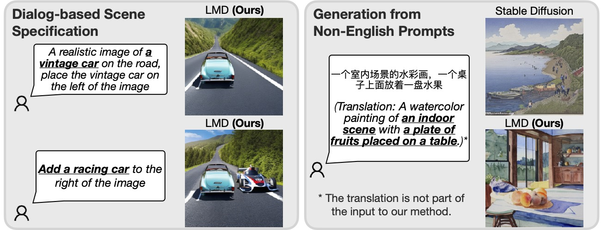

We equip diffusion models with enhanced spatial and common sense reasoning by using off-the-shelf frozen LLMs in a novel two-stage generation process.
LLM-grounded Diffusion enhances the prompt understanding ability of text-to-image diffusion models.
Incorporating an LLM for prompt understanding, LMD is able to perform dialog-based scene specification and generation from prompts in a language (Chinese in the example above) that the underlying diffusion model does not support.

If you use this work or find it helpful, please consider citing:
@article{lian2023llmgrounded,
title={LLM-grounded Diffusion: Enhancing Prompt Understanding of Text-to-Image Diffusion Models with Large Language Models},
author={Lian, Long and Li, Boyi and Yala, Adam and Darrell, Trevor},
journal={arXiv preprint arXiv:2305.13655},
year={2023}
}
Credit: The design of this project page references the project pages of NeRF, DeepMotionEditing, and LERF.